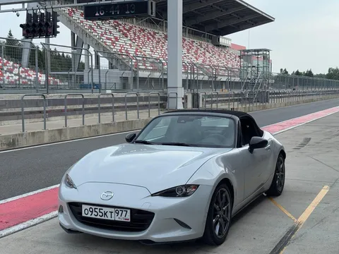

- "Вам сколько сессий?" - спросила девушка за стойкой. Я немного помялся, а потом выпалил - "Три!". Я не был уверен, что я выдержу три сессии, все же год не катался. Я не был уверен, что машина выдержит три сессии, ибо сток, и на треке я ее еще не проверял. Но чувство, что половина сезона уже бездарно потеряна, жгло и подгоняло.
"До начала следующего заезда 5 минут" - раздался голос из громкоговорителей. Машины послушно выстроились на пит-лейне. Я огляделся - заряженные порше, прокатные эмки, невнятные хот-хэтчи, и даже прототип. Черт, вот это пелетон. Оно и понятно - трек-дней в этом году мало, поэтому воскресным вечером сюда стянулись петролхэды всех мастей, от овощей типа меня до серьезных гонщиков. Будет потно. Главное - успевать замечать в зеркалах прототип и не лезть под него, иначе - ой!
До включения светофора остается с минуту. Включаю телеметрию, начинаю самонакачку, прокручиваю в голове первые повороты. "Это же не гонка, а простые покатушки" - звучит голос разума. Но предстартовый мандраж не унять. Надо поберечь машину, за три сессии все равно укатаюсь в салат. Так что не будем рваться сразу в бой - первый круг прогревочный, далее каждый третий остывочный.
Зеленый! Воздух наполняется утробным ревом полутора десятков моторов всех возможных конфигураций. Уже непонятно, от чего он дрожит над горизонтом - от жары ли, или пульсирует в унисон с нашими шатунно-поршневыми группами. Пелетон вытекает из пит-лейна на гоночную дорожку и сразу вваливается в первый левый.
Я, позабыв о прогреве шин и тормозов, сразу бросаюсь в атаку на зазевавшегося гольфа gti. Но сразу одергиваю себя - я уже в апексе второго поворота, а он коварней первого. Вываливаться наружу не стоит - там грозят ребята посерьезней, которые вот-вот начнут резать траекторию под правую улитку. Здесь не борщим, здесь я в гравии уже бывал, не понравилось.
Следующая связка левых не пугает - в них я привожу мало скорости, потому что после улитки не успеваю нормально разогнаться. А вот дальше два пологих изгиба, которые нужно идти во всю дыру - главное не струсить и, не отпуская газ, прописать правильную траекторию насквозь. Короткий прямик, 7600 оборотов - и вот уже набор высоты помогает сбросить скорость. Пытаюсь не сорвать машину в снос, не получается, но тут поребрик не опасный. Следующие 5 поворотов помню хуже, поэтому сейвлюсь, и все равно траекторно ошибаюсь. Ладно, на следующих кругах буду расторопней.
Длиннющая прямая, хоть и разорванная ретардером посередине, показыает, кто тут папочка (не я). Однако, под конец скорость уже за 150, и сейчас тормозам придется несладко. Скидываю на третью передачу, колеса почти блокируются. Последний поворот на старт-финишную прямую, и я снова выкручиваю мотор до звона, потому что мимо светофора надо ехать эффектно. Не знаю, почему, просто так принято.
Ко второму кругу уже более-менее вкатываюсь, и вспоминаю завет "ехать медленнее, чтобы ехать быстрее". Не надо пытаться пройти все повороты "на рогах", отбрасываю эмоции, начинаю писать траектории, облизывая апексы более грамотно. Позже тормозить, меньше скользить, раньше открываться. Впереди еще несколько кругов, не перегреть бы тормоза! Потом остыть, и снова в бой.
К концу третьей сессии сил не остается ни у меня, ни у машины. Но Миата показала себя превосходно, я перегрелся раньше. Такой рулежки и контроля я на кузовных машинах еще не испытывал (самое близкое - shortcut 527, он великолепен). Истинное единение кожаного мешка и тонны железа в поисках границы дозволенного, и чуть за пределами законов физики. Аригато годзаимас, Мазда-сан! До встречи на разгоне!
